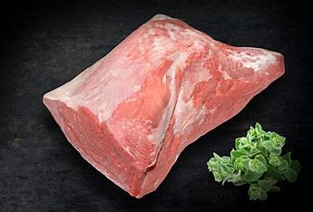
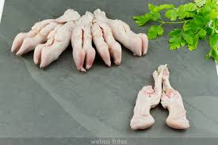

MORCILLO
Esta es una de las piezas mas melosas de la ternera
receta

Esta es una de las piezas mas melosas de la ternera
Pieza de ternera que es muy jugosa
Pieza de ternera sin nada de grasa ideal para hacer asada
Pieza con muy poca grasa, ideal para hacer a la plancha
Bien cocinada un manjar de dioses
Es una pieza muy jugosa sin nada de grasa,
se puede hacer a la plancha o asada,
exquisita.
Se suele comercializar en filetes que salen muy jugosos.
Filetes muy jugosos y con un hueso muy cotizado para hacer cocido.
Se suele realizar asado, muy jugoso.
Una pieza muy polivalente, bien para hacer caldos,
o depende del corte para hacer
asadas en
barbacoa
tipo
argentina.
Pieza estrella por excelencia, es como mantequilla,
tambien se puede cocinar por
ejemplo
estilo
wellington espectacular.
peza muy cotizada sin poca grasa, expecial para brasa.
Su presentacion lo dice todo, para los adeptos a la carne un lujo.
Bien para hacer a la brasa entera o partirla y hacerla con patatas.
esta es una de las piezas mas jugosas,
tanto para filetes como para guisar.
Esta es una de las piezas mas melosas de la ternera
Aunque todo el mundo diga cosas malas de esta pieza,
bien cocinada se deshace en la
boca.
Esta pieza esta entera y se divide en dos partes,
muy jugosa para filetes.
Esta es la otra parte que se denomina en el argot de los carniceros
"el solomillo
del
carnicero"
es
muy
jugosa
y aunque en el centro se ve como un nervio una vez cocinado
es muy
jugoso, se
puede
realizar en
filetes o
bien asado en salsa.
Pieza ideal para hacer asada
Esta pieza resulta muy jugosa al hacerla guisada
carne muy jugosa para guisar o picar
Esta pieza sirve para guisar, picar o rellenar
Esta pieza es muy jugosa para guisar
Esta pieza se cocina a la brasa y es como mantequilla
Esta pieza son los filetes mas grandes y suelen ser utilizados para hacer cachopos
Esta pieza es el morcillo pero con el hueso
Pieza exquisita se puede hacer asada o comer los sesos y carrilleras separadas

Un gran manjar que se pueden hacer en salsa o a la brasa
Pieza economica pero muy rica para hacer en salsa o con patatas
Pieza con mucha gelatina bien en salsa o rebozadas
Se puede hacer entera asada o en chuletas
Pieza economica para hacer en salsa
Pieza para hacer con patatas
Pieza muy rica asada o en chuletas
es una pieza muy grasa, se utiliza mucho para
hacer chorrizos y para hacer a la brasa
Estas piezas son muy jugosas
Esta pieza se puede cocinar entera o bien en filetes o chuletas si llevan hueso
Esta pieza se puede cocinar entera o bien en filetes
Esta pieza es muy melosa
Esta pieza es muy tierna
Esta pieza se puede cocinar de muchas formas es muy jugosa
Esta pieza se puede cocinar entera o bien en filetes
Esta pieza se puede cocinar entera o bien en filetes
Esta pieza se puede cocinar entera o bien en filetes
Esta pieza se puede cocinar entera o bien en trozos
Esta pieza es muy jugosa
Es muy entretenido de comer porque tiene mucho huesito, pero es exquisito
Esta pieza se puede cocinar entera o bien en filetes
Esta pieza se suele utilizar para dar gusto a los caldos
Esta pieza se puede cocinar entera o bien en trozos
Esta pieza se puede cocinar entera o bien en trozos
Esta pieza se puede cocinar entera o bien en trozos
Esta pieza se puede cocinar entera o bien en trozos